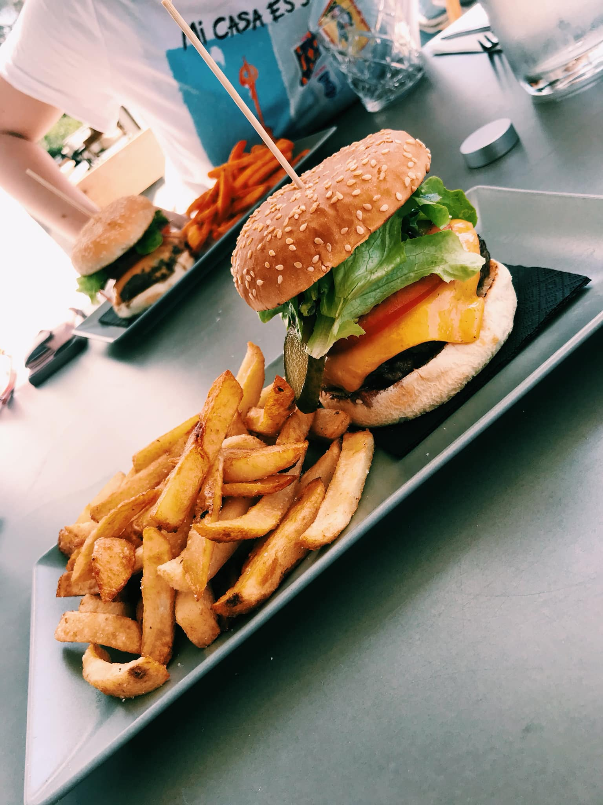
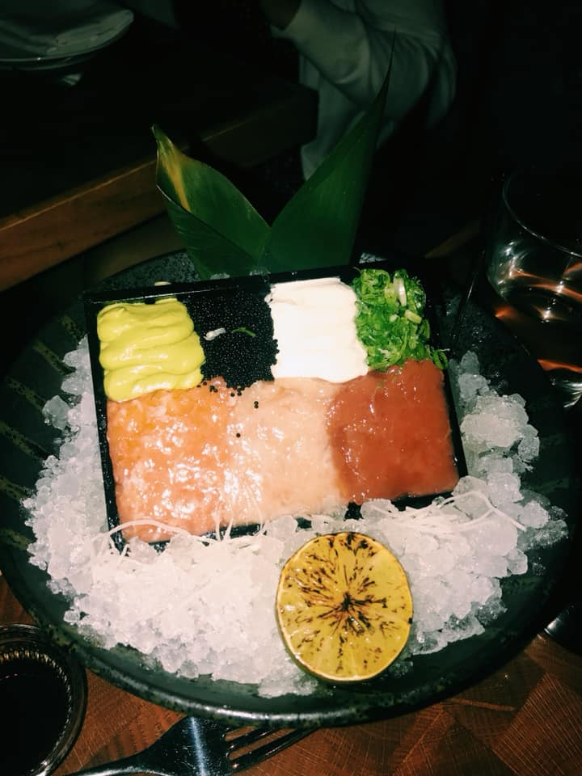
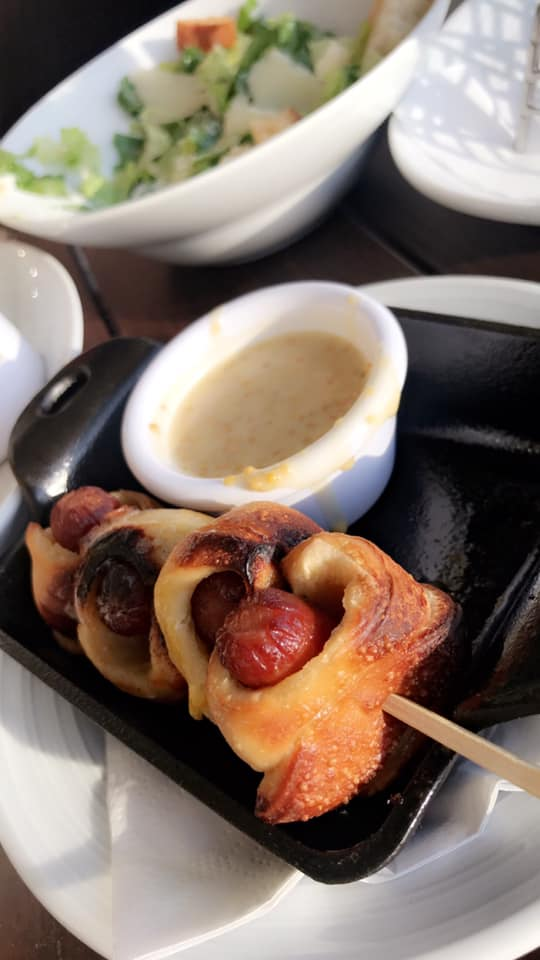
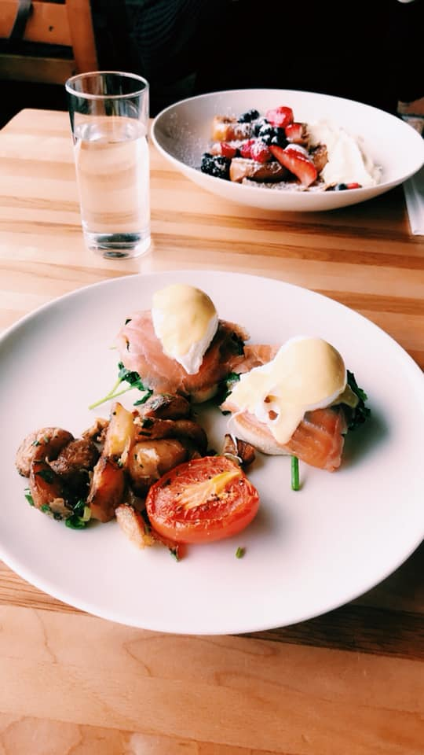

The fresh fish in Iceland is one of the most divine features of this spectacular country. To much of my surprise, I did not think the sushi would be of any special ordinary. However, it was one of the best rolls I have ever had. Much of the fish in Iceland is extremely local and this restaurant, Norð Austur – Seyðisfjörður gets fresh catches every morning. This roll was a white rice based roll with smoked salmon on the inside. On top of each piece was a slice of the freshest tuna I have ever had. The spicy mayo was homemade and phenomenal. I highly recommend this restaurant to any sushi lovers heading to Iceland.
A burger in Iceland? I was just as confused as you are. However, boy was I proven wrong! This burger took an american style cuisine and took their own Icelandic spin on it. Sæta svínið is a classic local staple in Reykjavik and was suggested to us by all our local tour guides. The burger was half beef and half bison. I was hesitant to go to Iceland because they are often famed for their eclectic food suggestions such as whale, ox-tail, cow tongue, etc. Although those are served there are plenty of other foundational options tourists can choose from.
After trying some of the fresh fish served in Iceland during the beginning of the trip, we were all hooked! One local spot served up a unique way to eat raw fish, very gourmet style. This dish included fresh Icelandic smoked salmon, yellowtail , tuna tar-tar, caviar and a variety of sauces homemade to the restaurant. After trying to look up the name of this restaurant, I found out that it unfortunately closed a few months ago. However, there are many other places that offer smoked fish like this at similar prices.
Another type of food Iceland is notoriously known for is their hot dogs! There were many hot dog carts on the streets of Reykjavik in addition to being served in many restaurants. Unfortunately, we did not get a chance to eat from the traditional famous hot dog stand, Bæjarins Beztu Pylsu but we found a restaurant offering a spin on what is served there. These hot dog bites were delicious! They had a flaky breading around the hot dog and was one of the best I have ever had. We found that many of Iceland’s restaurants are extremely americanized and therefore, had a similar style to the pig in the blankets served here. Despite the similarities, they were unique in their own way. Although, I hope to go back and try a more native version!
Our last stop before going home was to Bryggjan Brugghús. This place had an extremely nice brunch menu with a lot of native options. Pictured here was a special they were offering. It consisted of poached eggs, fresh salmon and portobello mushrooms. Truly delicious! This restaurant also features other fresh fish like cod, mussels, tuna and octopus. Additionally, we had a dessert made from Liquorice mousse which was incredible! I highly recommend this restaurant to anyone willing to pay the extra money for a unique and delicious menu.